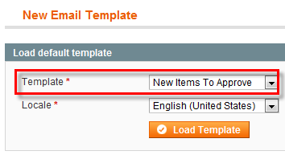
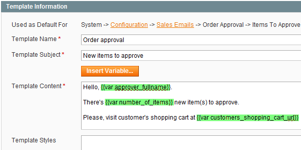

<?xml version="1.0" encoding="UTF-8"?><rss version="2.0"
	xmlns:content="http://purl.org/rss/1.0/modules/content/"
	xmlns:wfw="http://wellformedweb.org/CommentAPI/"
	xmlns:dc="http://purl.org/dc/elements/1.1/"
	xmlns:atom="http://www.w3.org/2005/Atom"
	xmlns:sy="http://purl.org/rss/1.0/modules/syndication/"
	xmlns:slash="http://purl.org/rss/1.0/modules/slash/"
	>

<channel>
	<title>Notifications &#8211; Magento web-to-print &amp; dynamic imaging</title>
	<atom:link href="http://www.zetaprints.com/magentohelp/tag/notifications/feed/" rel="self" type="application/rss+xml" />
	<link>http://www.zetaprints.com/magentohelp</link>
	<description>Just another WordPress site</description>
	<lastBuildDate>Fri, 07 Jun 2013 06:55:21 +0000</lastBuildDate>
	<language>en-US</language>
	<sy:updatePeriod>hourly</sy:updatePeriod>
	<sy:updateFrequency>1</sy:updateFrequency>
	<generator>https://wordpress.org/?v=4.4.1</generator>
	<item>
		<title>Order approval notification eMail</title>
		<link>http://www.zetaprints.com/magentohelp/order-approval-notification-email/</link>
		<pubDate>Mon, 04 Oct 2010 16:14:18 +0000</pubDate>
		<dc:creator><![CDATA[admin]]></dc:creator>
				<category><![CDATA[Order approval plugin]]></category>
		<category><![CDATA[Approval]]></category>
		<category><![CDATA[Email template]]></category>
		<category><![CDATA[Notifications]]></category>

		<guid isPermaLink="false">http://www.zetaprints.com/help/?p=10629</guid>
		<description><![CDATA[The Order approval procedure involves notifying nominated approvers when there are customer orders that are pending their approval. This email notification can be customized according to your preference. Administrators can create new e-mail templates based on original Magento templates. There&#8217;s an e-mail template editor in Magento admin panel. Step 1 Navigate to System / Transactional [&#8230;]]]></description>
				<content:encoded><![CDATA[<p>The <a title="Magento order approval" href="../../../magento-order-approval/" target="_self">Order approval</a> procedure involves notifying nominated approvers when there are customer orders that are pending their approval. This email notification can be customized according to your preference.<span id="more-10629"></span></p>
<p>Administrators can create new e-mail templates based on original <a title="Magento ecommerce" href="http://www.magentocommerce.com/" target="_self">Magento</a> templates. There&#8217;s an e-mail template editor in Magento admin panel.</p>
<h2>Step 1</h2>
<p>Navigate to <em>System / Transactional Emails</em> and click on <strong>Add New Template</strong> button.</p>
<div style="display: table;">
<p></p>
<div style="position: relative; top: 15px; display: inline;">Select <strong>New Items To Approve</strong> template from the list, choose a locale to use the new template in and click <strong>Load Template</strong> button to load content of the template for further editing.</div>
</div>
<h2>Step 2</h2>
<p>Input a name for the new template and edit its subject and content.</p>
<p></p>
<p><strong>Note.</strong> Do not edit parts short-coded inside <em>{brackets}</em>. They are variables that will be replaced with approver email, number of items, etc. in the final email.</p>
<p>When done, press <strong>Save Template</strong> button.</p>
<h2>Step 3</h2>
<p>To activate your customized email template and use it for notifying nominated approvers, navigate to <em>System / Configuration / Sales Emails / Order Approval Tab</em> and pick the email template from the list.</p>
]]></content:encoded>
			</item>
	</channel>
</rss>

<!-- Localized -->